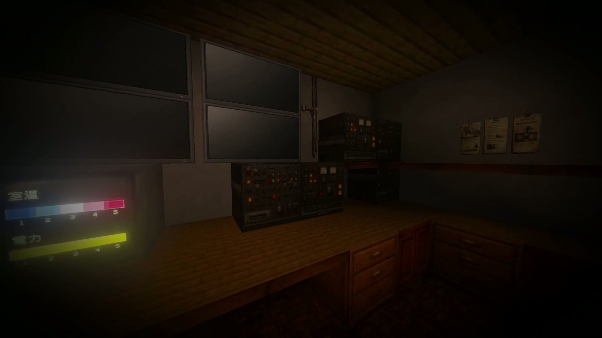
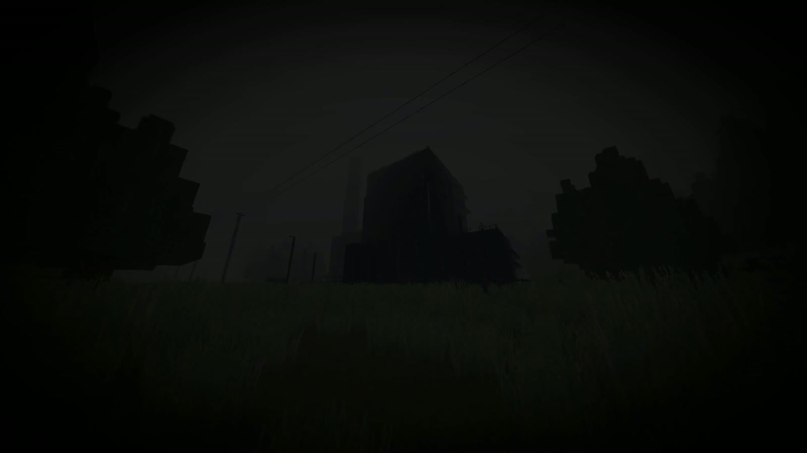
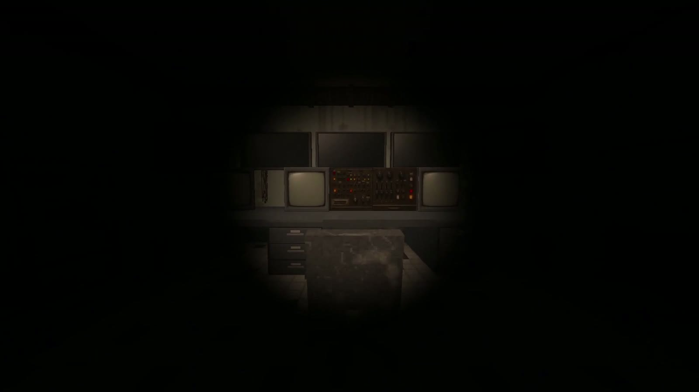
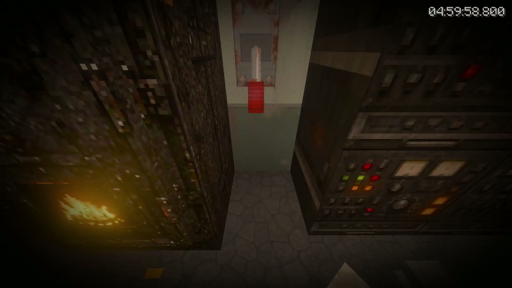
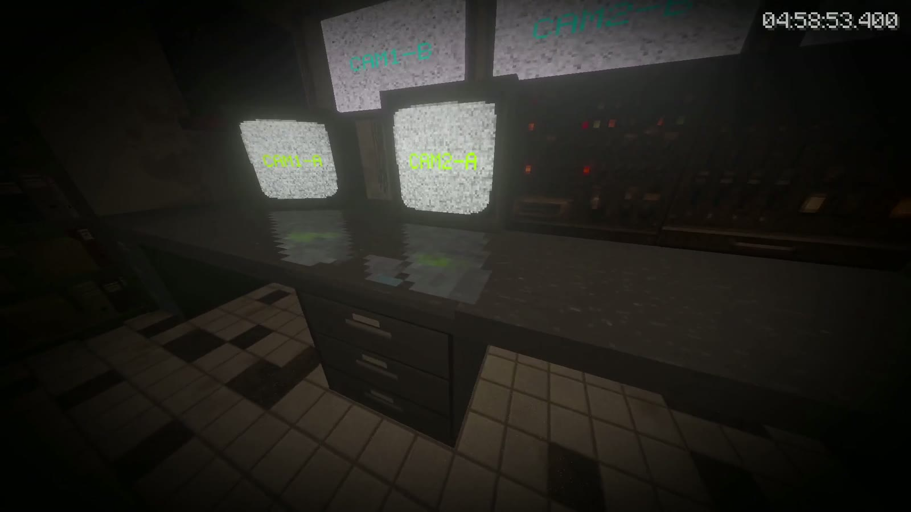
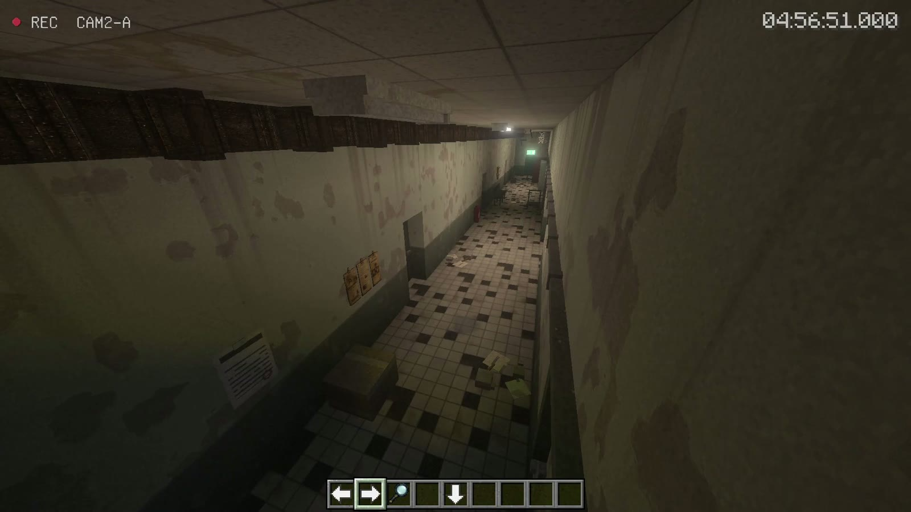
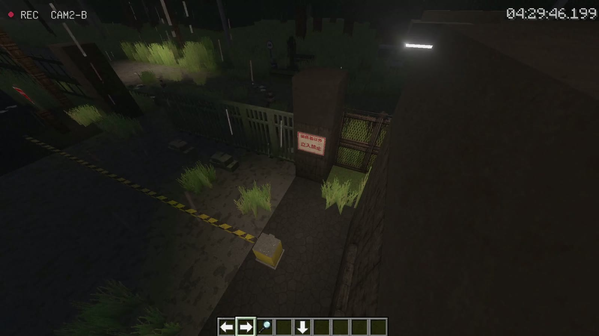

4時を過ぎても、嵐はやまなかった。
高次干渉嵐オトズレの続編。あの夜、時計が4時を回っても、嵐は終わらなかった。
観測所は機能を失い、仲間を残したまま外へ逃げた。雨の中を走り、たどり着いたのは、とうに捨てられた古い工場。そこにも監視室があった。
今度見張るのは、建物の中だけではない。外に3台、中に4台。7台の監視カメラに映る景色から、あるはずのないものを探し、朝まで持ちこたえる。
外の3台と中の4台を切りかえながら見張る。外のカメラは静かで、中のカメラは落ちつかない。
おかしなものを見つけたら、10種類の中から何が起きているかを選んで指摘する。外れると電力を失う。
電力は少しずつ減っていく。モニターの前を離れ、別の部屋の発電機に石炭をくべなければならない。
操作するのは1人。ほかの参加者は、操作する人の視点をそのまま見て、一緒に見張れる。
ふだんの様子をよく覚えておくと、変化に気づきやすい。
| 指摘の種類 | どんなとき |
|---|---|
| 物体出現 | 見慣れない物が増えている |
| 物体消失 | あるはずの物が無くなっている |
| 物体変化 | 物の見た目や状態が変わっている |
| 物体移動 | 物の位置が変わっている |
| 照明の異常 | 明かりの点滅や消灯など |
| 音 | 鳴るはずの音がしない、変な音がする |
| カメラ異常 | 映像そのものが歪む、移動するなどの不調 |
| 空間の異常 | 空間そのものが歪んでいる |
| 深淵 | 画面が黒く塗り潰されていく |
| 来訪者 | 何かがいる |







v1.0.0 — .mcworld ファイルです。
v1.0.0 (約60MB)